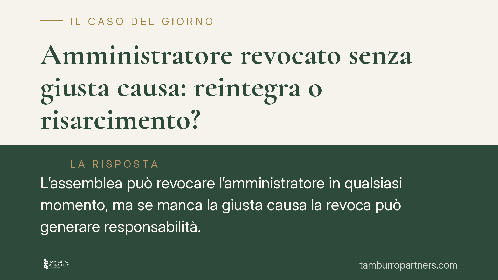

Amministratore revocato senza giusta causa: reintegra o risarcimento?
L'assemblea può revocare l'amministratore in qualsiasi momento, ma se manca la giusta causa la revoca può generare responsabilità. La giurisprudenza di legittimità esclude il ritorno al posto: l'amministratore non ha diritto alla reintegra, solo al risarcimento del danno effettivamente provato. Un principio che ridisegna gli spazi di tutela di entrambe le parti nel rapporto condominiale.

Il caso e il principio
Un amministratore viene revocato dall'assemblea prima della scadenza del mandato. Non ricorre alcuna delle irregolarità che giustificano l'allontanamento. Può pretendere di tornare al suo posto?
La risposta, in linea con l'orientamento consolidato della giurisprudenza di legittimità, è negativa. L'amministratore illegittimamente revocato non ottiene la reintegra nell'incarico. Gli resta però una tutela per equivalente: il risarcimento del danno, a condizione che ne dimostri l'esistenza e l'entità.
È la distinzione classica tra tutela reintegratoria (il ritorno alla situazione precedente, qui esclusa) e tutela risarcitoria (la compensazione economica del pregiudizio subito, ammessa entro precisi limiti probatori).
Inquadramento normativo
Il riferimento è l'art. 1129 del codice civile, che disciplina nomina, revoca e obblighi dell'amministratore. La norma fissa un principio chiave: il rapporto tra condominio e amministratore è fiduciario. L'assemblea conferisce l'incarico e può revocarlo, perché non può essere costretta a mantenere in carica chi non gode più della sua fiducia.
Da qui deriva l'impossibilità della reintegra. Imporre il ritorno di un amministratore sgradito significherebbe forzare la prosecuzione di un rapporto basato, per definizione, sulla fiducia. Il diritto non lo consente.
Altra cosa è la giusta causa. Il comma 12 dell'art. 1129 c.c. tipizza le gravi irregolarità che legittimano la revoca giudiziale: dalla mancata convocazione dell'assemblea per il rendiconto, all'omessa apertura o utilizzo del conto corrente condominiale, fino alla mancata comunicazione di liti o alla gestione contabile non trasparente. Quando ricorre una di queste ipotesi, la revoca è pienamente giustificata e nessun risarcimento è dovuto.
Quando invece la revoca interviene senza che sussista alcuna di queste ragioni, e comunque prima della scadenza naturale del mandato, l'amministratore può agire per il danno da anticipata cessazione dell'incarico.
Implicazioni pratiche
Per l'amministratore il messaggio è netto: puntare sulla reintegra è una strada chiusa. L'unico terreno praticabile è quello risarcitorio, che però impone un onere probatorio serio.
Non basta lamentare l'illegittimità della revoca. Occorre provare due elementi distinti: l'assenza di una giusta causa e l'esistenza di un danno concreto e quantificato, come i compensi maturandi fino alla scadenza del mandato. Il pregiudizio non si presume: va documentato.
Per il condominio, il quadro è speculare. La libertà di revoca resta ampia, ma non è priva di conseguenze economiche quando l'allontanamento è privo di fondamento e anticipa la scadenza. La delibera va motivata con attenzione, ancorandola, dove esistono, alle irregolarità tipizzate dalla norma.
Cosa fare in concreto
Se sei l'amministratore revocato:
- Verifica se la revoca è avvenuta prima della scadenza del mandato e se la delibera indica una motivazione riconducibile alle gravi irregolarità dell'art. 1129 c.c.
- Raccogli la documentazione utile a quantificare il danno: contratto, durata residua dell'incarico, compenso pattuito.
- Non impostare l'azione sulla reintegra: concentra la difesa sulla prova dell'illegittimità e del pregiudizio economico.
Se sei il condominio o un condomino:
- Prima di deliberare la revoca anticipata, valuta se ricorrono ragioni oggettive e verbalizzale con precisione.
- È opportuno acquisire un parere qualificato quando la revoca precede la scadenza del mandato, per ridurre l'esposizione a domande risarcitorie.
In sintesi
La revoca è sempre possibile, perché il rapporto è fiduciario. Ma se manca la giusta causa e l'incarico viene interrotto in anticipo, il condominio può essere chiamato a risarcire. L'amministratore, dal canto suo, non torna in carica: ottiene, al più, il ristoro economico che riesce a provare.
---
*Contributo informativo a cura di Tamburro & Partners Avvocati. Non costituisce parere legale.*
Ogni condominio ha una storia a sé.
Se gestisci un'amministrazione e vuoi un confronto su una specifica questione condominiale, scrivi allo studio. Ti rispondiamo entro un giorno lavorativo.